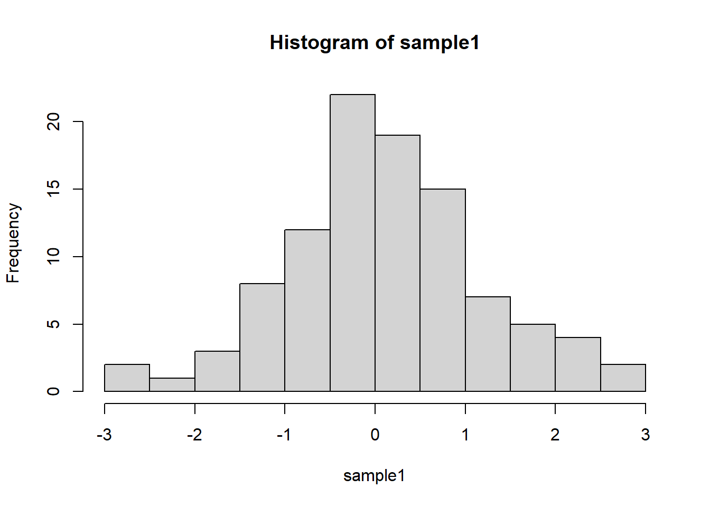

Section 03 Review of statistic basics (I)
Pre-class reading: [FPP] p475-482; [RS] p1-22 |
Section Example: Winter Vacation
This section starts with a poll. Suppose we want to know how many days ESE335 students will stay at home for the coming winter vacation.
First, each student is assigned with and ID
Second, please think about your answer to the question. We will ask you later.
Now, we will ask answers from the students with random drawing.
Population vs sample
From this simple poll, hopefully you have a clear understanding about:
Population. A population is a set of entities from which statistical inferences are to be drawn.
Sample. A sample is a set of data collected and/or selected from a population by a defined procedure. Here we draw samples through simple random sampling.
Statistical sleuthing
Statistics is a common bond supporting all other sciences. It provides standards of empirical proof and a language for communicating scientific results.
The first part is generally referred as Statistical sleuthing, which is the process of using statistical tools to answer questions of interest. It includes:
designing experiments to unearth hidden truths
describing real data using tools based on ideal mathematical models
answering the questions of interest efficiently
verifying that the tools are appropriate
snooping around to see if there is anything more to be learned.
Standard Statistical Terminology
A parameter is an unknown numerical value describing a feature of a probability model. Parameters are indicated by Greek letters.
A statistic is any quantity that can be calculated from the observed data. Statistics are represented by Roman letter symbols.
An estimate is a statistic used as a guess for the value of a parameter. The notation for the estimate of a parameter is the parameter symbol with a hat on it.
Statistics describing a sample
Center
Call the mean() function to compute average.
Spread
The standard deviation is a measure of spread, interpreted as the typical distance between a single number and the set’s average.
In R, standard deviation can be computed with the sd() function.
Skewness
Skewness is a statistical numerical method to measure the asymmetry of the distribution or data set. It tells about the position of the majority of data values in the distribution around the mean value. Distributions can exhibit right (positive) skewness or left (negative) skewness to varying degrees. A normal distribution (bell curve) exhibits zero skewness.
Call the skewness() function in the moments package to compute the skewness.
Kurtosis
Kurtosis is a numerical method in statistics that measures the sharpness of the peak in the data distribution.
Call the kurtosis() function in the moments package to compute the kurtosis.
Other statistics
We have covered many of the summary functions, make sure you understand what the following functions return: median(), range(), max(), min(), var(), IQR(), summary(). Pay attention to data sets containing NA values.
An example
# Drawing a sample (n=100) from a normal distribution
sample1 <- rnorm(n=100, mean=0, sd=1)
# OK, let's take a quick look at the data
hist(sample1)
## [1] -0.09368209## [1] 0.9284154## [1] -0.2715485## [1] 2.332954#--------------------------------
# Make a log-normal
sample2 <- exp(sample1+1)
# Check
hist(sample2)
## [1] 3.614241## [1] 3.127684## [1] 1.583463## [1] 5.785409In-class exercises
Exercise #1
Can you create a left-skewed sample? Can you repeat we did in the above example?
Solution:

## [1] 1.271567## [1] 0.8547489## [1] -1.83253Exercise #2
One of the most important theorems in all of statistics is called the Central Limit Theorem or the Law of Large Numbers.
It states that given a sufficiently large sample size from a population with a finite level of variance, the mean of all samples from the same population will be approximately equal to the mean of the original population.
Furthermore, as you increase the number of samples and the sample size, the distribution of all of the sample means will approximate a normal distribution even if the original variables themselves are not normally distributed.
Can you demonstrate the two statements using R?
Solution:
# Central Limit Theorem
Simulations <- 10000
Samle_size <- 1000
Sample_mean <- c()
# We draw samples form a unifrom distribution
sample <- runif(Samle_size, min = 0, max = 10)
for(i in 1:Simulations){
# Sample from a distribution
sample <- runif(Samle_size, min = 0, max = 10)
# Compute the sample average
average <- mean(sample)
# Store the sample average
Sample_mean <- c(Sample_mean, average)
}
# Plot hist of sample averages
hist(Sample_mean)
## [1] 4.99993## [1] 0.09039273## [1] 0.01428818